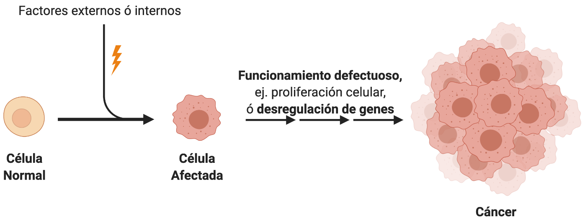
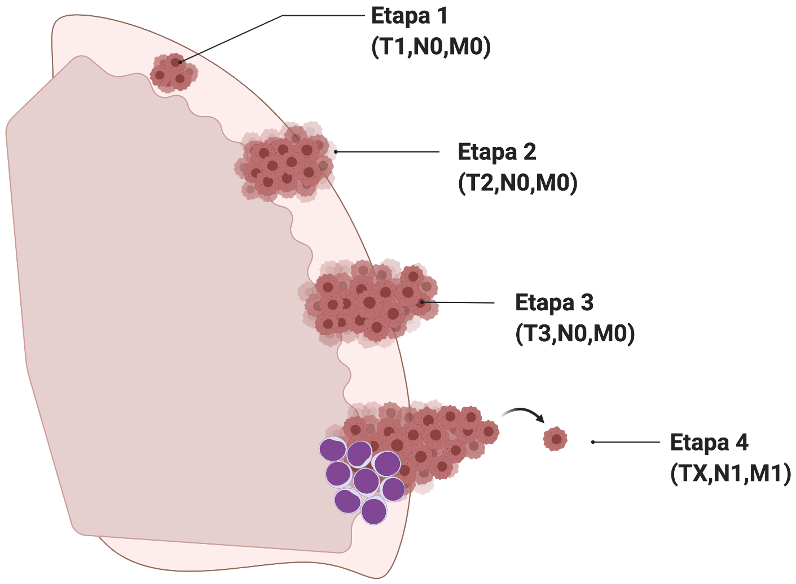
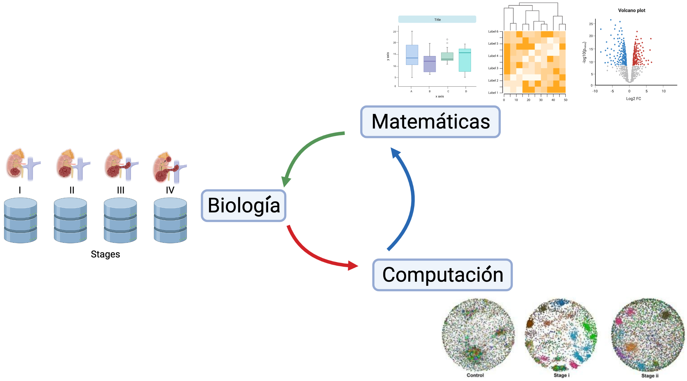
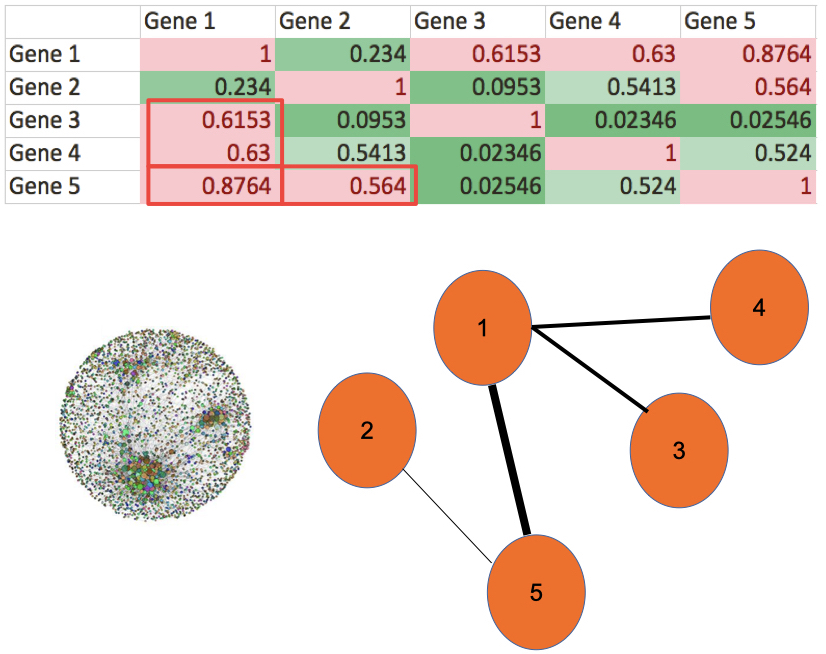

Ciencia de Datos y Cáncer
Dr. José María Zamora Fuentes
Intituto Nacional de Medicina Genómica
Marzo, 2024
Introducción
Cáncer

Progresión del Cáncer
[1] Stephen B. Edge, et al. “The American Joint Committee on Cancer: the 7th Edition of the AJCC Cancer Staging Manual and the Future of TNM”. Annals of Surgical Oncology 17. 6(2010): 1471–1474.
Regulación genética y epigenética

Fuentes de datos
- TCGA (The Cancer Genome Atlas)
- 11,300 pacientes
- más de 30 tejidos de cáncer.
- Secuenciación de RNA
- mRNA
- miRNA
- Secuenciación de 450K sitios CpG
[1]The Cancer Genome Atlas Research Network. “Before and After: Comparison of Legacy and Harmonized TCGA Genomic Data Commons Data”. Cell Systems. 2019;9(1):24-34.e10.
Biología de sistemas

Sistema Complejo

Objetivo
Encontrar genes clave que son afectados por
miRNAs o por metilación. Estos genes
cambian su programa regulatorio, de expresión y de
co-expresión durante
la progresión del cáncer.
Metodología
Caso de estudio: Carcinoma Renal
- Cáncer “silencioso” (ausencia de síntomas).
- 80% de los casos se diagnostican de manera incidental en imágenes solicitadas por otros motivos,
- de estos casos, el 20% son diagnosticados en etapas avanzadas,
- en este porcentaje la tasa de mortalidad es del 95% a los 5 años.
- Factores de riesgo: fumar, hipertensión, obesidad, diabetes.
[2]James J. Hsieh, et al. “Renal cell carcinoma”. Nature Reviews Disease Primers 3. 1(2017).
CRcc - Características Moleculares
- 85% se encuentran en células claras.
- Línea principal: Mutaciones en VHL.
- Pérdida en VHL no induce CRcc.
- Biomarcadores de metilación no especificados.
- Histopatalogía con alta degradación de MEC (regado de estroma)
[2]James J. Hsieh, et al. “Renal cell carcinoma”. Nature Reviews Disease Primers 3. 1(2017).
Construcción inicial

Construcción de redes de coexpresión

Resultados
Coexpresión Gen-Gen (mRNA)
Redes de coexpresión genética

[3]Jose Maria Zamora-Fuentes, et al. “Gene Expression and Co-expression Networks Are Strongly Altered Through Stages in Clear Cell Renal Carcinoma”. Frontiers in Genetics 11. (2020).
Conclusiones

Implicaciones (1)
- La identificación de factores genéticos y epigenéticos son resultado de experimentos complejos. Este tipo de métodos computacionales pueden proveer de nuevas hipótesis (ingeniería reversa) con un relativo bajo costo.
- Los resultados in-silico pueden geneerar evidencia de biomarcadores con potencial aplicación clínica.
Implicaciones (2)
- Los resultados de estos experimentos computacionales destacan el impacto del carácter inmunológico del cáncer.
- El programa de expresión en cáncer tiene afectaciones debido a patrones regulares en genes específicos que se amplifican como un sistema biológico complejo.
Trabajo futuro
- Usar esta metodología para evaluar los siguientes tejidos de cáncer.
- Explorar las diferencias en los genes para la metilación.
- Validar experimentalmente los resultados.
- Experimentos usando sc-RNAseq
- Explorar otras bases de datos (GEO, ENCODE, etc)
Artículos publicados
- Gene Expression and Co-expression Networks Are Strongly Altered Through Stages in Clear Cell Renal Carcinoma. (F. Genetics, 2020)
- Gene co-expression in breast cancer: a matter of distance. (F. Oncology, 2021)
- Loss of long distance co-expression in lung cancer (F. Genetics, 2021)
- Oncogenic Role of miR-217 During Clear Cell Renal Carcinoma Progression. (F. Oncology, 2022)
- Methylation-related genes involved in renal carcinoma progression (F. Genetics, 2023)
¡Gracias!
- Dr. Jose Maria Zamora Fuentes
- josema.genomics@gmail.com
- ¡Pueden contactarme los estudiantes interesados!
Apendice
Estudiantes interesados
- Skills:
- Programación en R y Python
- Manejo de bases de datos SQL
- Desarrollo de Apps (Javascript)
- Conceptos básicos de Biología Molecular
- Conceptos básicos de emfermedades crónico-degenerativas.
- Proyectos
- Servicio social
- Titulación Licenciatura y Maestría
- Estancias en empresas privadas.
Modelo de trabajo
- Vieja escuela
- Iniciativa privada (Emprendimiento de Negocios)
- Desarrollo Personal
- Aprendizaje estoico de la Ciencia y la Programación (Computación)
- ¡Los experimentales han muerto!
El mundo real
- Comer
- La salud
- Inversión y sacrificio
- Generar gananacias
- ¡En el mundo real los leones se comen a las zebras!
Proyectos en Ciencia de Datos
- Sistemas anticorrupción en el Gobierno
- Relación en los mercados farmaceúticos y política econonómica
- Procesamiento del Lenguage Natural en la Jurisprudencia
- Análisis de Sentimientos en Twitter
- Cancer, Diabetes, VPH, Sindromes
- Dietas alimenticias (Veganismo, vegetarianismo, etc)
- Reconocimiento de imagenes histopatológicas
- Análisis de mercados financieros, etc.
Microambiente

[1]Yoshihara K, Inferring tumour purity and stromal and immune cell admixture from expression data. Nat Commun. 2013;4(1):2612.
Biogénesis de miRNAs (canónica)

Biorender https://biorender.com/